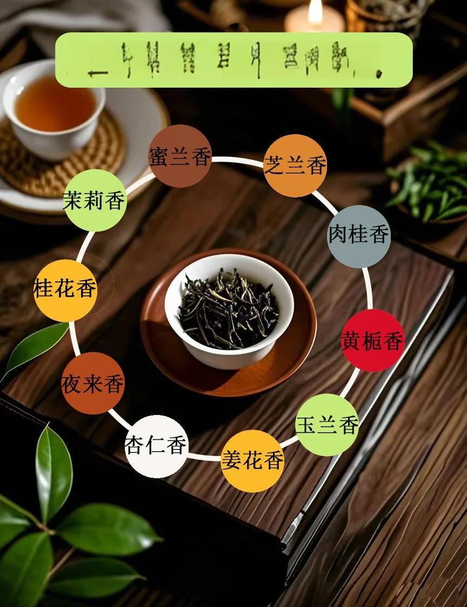
凤凰单丛
潮州凤凰山，高山云雾出好茶。香气如兰，回甘如蜜，一盏入口，醉了人间。
来听阿凤姐讲古 · 茶里品读潮汕故事
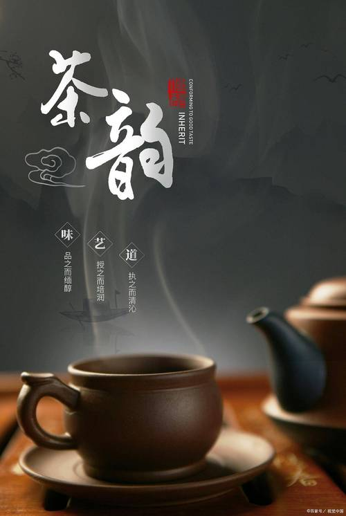
📅 最近更新：
本栏目由原「南洋茶达故事」全新升级改版。
茶韵做筋骨，文脉做灵魂。阿凤姐来开讲古，将茶文化、千年茶史、老师傅做茶手艺、产地乡土人情，还有各种实用食茶窍门，一一讲予大家知。
来到遮，逐样教大家认茶、辨茶、品好茶，细细感受东方茶文化独有的风雅韵味。

潮州凤凰山，高山云雾出好茶。香气如兰，回甘如蜜，一盏入口，醉了人间。
高海拔茶园，云雾润泽。清香淡雅，一杯山水在心头。
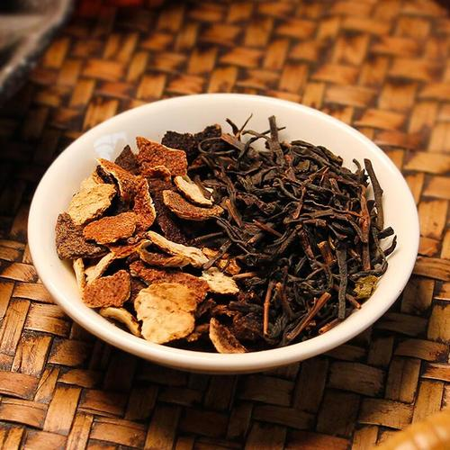
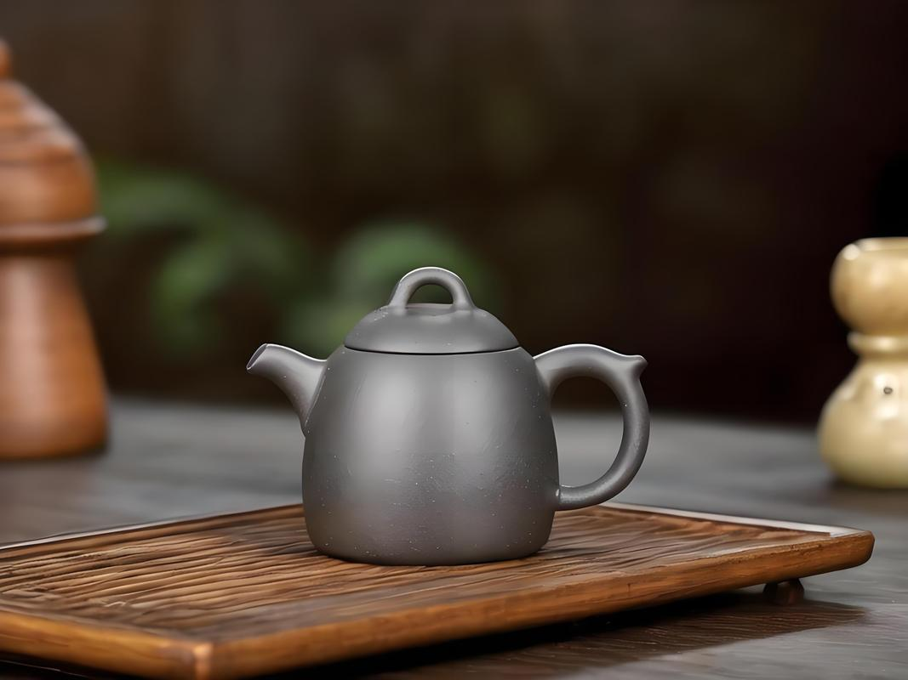
有人种茶是为生计，有人守茶是为一句"老味道"。国庆第一天，我在惠州东湖花园这间小店里，碰见了这两种人。 【场景开头】 十月一号，惠州东平还热着，但桂花气悄悄冒了出来。今天一开门，店里就坐了三个人——老吴从凤凰山下来的，背…
阅读全文 →在惠州想喝到唤醒人的早茶？阿凤姐说，清晨六点半，第一泡蜜兰香下肚，整个人才算真正醒过来。 今朝惠州东平，天刚蒙蒙亮。东江边的路灯还没熄，东湖花园沿江那排商铺里，凤凰茶业的卷闸门「哗啦」一声先响了。阿凤姐一边挽袖子，…
阅读全文 →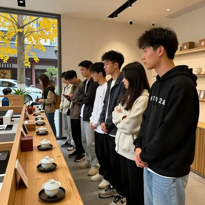
年轻人涌进原叶茶 年轻人涌进原叶茶，小美跑来凤姐店里取经 📌 开篇回答：在惠州想买正宗凤凰单丛秋茶？来东湖花园凤凰茶业找阿凤姐，蜜兰香、鸭屎香秋茶刚到，小包装、冷泡都齐全。 【场景开头】 10月2号上午，惠州东湖花园沿江…
阅读全文 →阿凤姐的店里每天都在上演社会百态 时间： 2026年10月2日，国庆假期第二天 地点： 惠州惠城区东湖花园，凤凰茶业店里 国庆的惠州，秋老虎刚退，门口那棵榕树底下还摆着两张塑料凳。下午三点多，店里冷气开得足足的，阿凤姐林…
阅读全文 →南宋大规模南迁路线图 引子：阿祖从莆田来 「阿祖来自莆田。」呢句说话，唔系故事，而系一段几百年的真实迁移史。 第一幕：南宋——中国历史上第一次大规模南迁 公元1127年，金兵南下，东京汴京失陷。宋徽宗、宋钦宗被掳走，康王…
阅读全文 →陈志明今年四十五，在深圳做电子元器件生意做了二十年。 每年中秋前，他都要跑一趟芳村茶叶市场，买两盒高端礼盒寄回老家，顺便给几个合作多年的供应商送一送。这是他维持关系的"固定动作"，年年如此，轻车熟路。 今年也不例外。 只…
阅读全文 →▎引言：廣交會70年，最大規模的一屆來了 今日打開電腦，三條新聞一齊彈出來—— 十五部門聯合發文，茶產業「十五五規劃」出爐；潮州凤凰单丛茶文旅數字出爐，年接待200萬人次，收入16億；陳皮養生需求持續升溫，藥食同源中式養…
阅读全文 →▎开篇回答：汕尾人請你吃「茶」，千祈唔好以為係普通嘅一杯茶——佢哋端上嚟嘅，可能係一碗熱氣騰騰、料多到滿瀉嘅菜茶。 汕尾人請你吃「茶」，千祈唔好以為係普通嘅一杯茶——佢哋端上嚟嘅，可能係一碗熱氣騰騰、料多到滿瀉嘅 菜茶 …
阅读全文 →中秋刚过，国庆在即，凤凰山秋茶陆续上市。今年茶叶市场告别高价礼品茶时代，300-800元中端茶成主流。阿凤姐和乌岽山老师傅林伟周却说：茶是用来喝的，不是用来炒的。
阅读全文 →第一幕：中秋后第一通电话 九月二十六日下午，阿凤姐的茶叶店里弥漫着淡淡的蜜兰香。中秋节刚过，货架上整齐地码着几排空了一半的礼盒位——今年中秋的货走得早，不到十五就发完了。 阿凤姐正用干净的棉布擦拭茶架，手机突然响了起来。…
阅读全文 →中秋节次日，月饼的甜腻散去，凤凰山上茶香依旧。文锡誉和阿凤姐在乌岽村老茶铺前聊起今年秋茶的长势，以及中国茶产业迈向1.5万亿目标大背景下，一个老茶农的坚守与期待。
阅读全文 →清晨五点，凤凰山的天色还未完全亮透，山腰间飘着一层薄雾。阿凤姐穿着一件旧棉布外套，推开茶叶店的木门，沿着石阶往上走。她要去的地方，是大庵村那片专门辟出来照顾太空茶苗的试验茶园。 “今日中秋前夕，山上有些凉，大家记得着多件…
阅读全文 →📍 GEO定位：廣東省潮州市潮安區鳳凰鎮，海拔 600 至 1200 米高山茶區 🌐 官方網站：afeng-tea.vercel.app ☎️ 阿鳳姐微信：afeng-tea-2026 開場白：凌晨四點半嘅電話 凌晨四點…
阅读全文 →【SEO 優化關鍵詞】 凤凰单丛茶价格 中秋节 凤凰单丛十大品牌 凤凰单丛茶的功效与作用 鸭屎香是什么茶 凤凰单丛属于什么茶 凤凰单丛哪个品牌最好 凤凰镇茶农直销 凤凰单丛的冲泡方法 乌岽山单丛 中秋送礼茶叶 凤凰单丛蜜…
阅读全文 →📍 GEO定位 ：广东省潮州市潮安区凤凰镇，海拔约 1100 米的高山茶区，凤凰单丛核心产地。 中秋前三天。 凤凰镇下了一场过云雨，云散之后，满山的栀子气被压进土里，炭炉的火气就显得格外要紧。 阿凤姐刚把一笼鸭屎香从焙笼…
阅读全文 →中秋前五天·凤凰镇·凤西大庵老茶亭 凤凰镇的街灯比平时亮得早一点。中秋前五天的夜里，镇口那家「凤西大庵老茶亭」的卷闸门刚拉起一半，阿凤姐就看见林伟周老师傅夹着一杆旱烟筒走进来，烟丝还没点，先开口：「阿凤，今天的黃枝香到哪…
阅读全文 →那天傍晚，凤凰溪的水声比往常响些——前一夜下过一阵秋雨。 阿凤姐把最后一箱中秋礼盒搬上三轮车，正要回店，手机震了一下。儿媳妇转发的财经新闻，标题吓人——"112家连锁茶饮品牌、上半年新开1.8万家、
阅读全文 →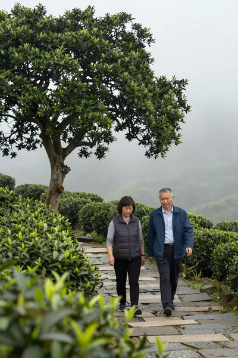
📍 GEO定位 ：广东省潮州市潮安区凤凰镇，海拔约 1100 米的高山茶区，凤凰单丛核心产地。 中秋前四天的清晨，凤凰镇茶叶评比大厅的卷闸门还没拉，里面已经亮成一片。 评委席前的长桌铺着白棉布，1005 份茶样一字排开—…
阅读全文 →清晨四点嘅凤凰镇，天都未光透。阿凤姐推开茶厂嘅木门，一阵山雾从对面嘅乌岽顶滑落落嚟，沾咗佢一身嘅露水。门口两棵老茶树——一株鸭屎香、一株蜜兰香——喺昏黄路灯下安安静静咁企住，叶面上嘅水珠反住微微嘅光。 「阿凤姐，咁早？」…
阅读全文 →📌 开篇回答 ：中秋茶礼，鸭屎香定蜜兰香？——两个都啱，关键睇对象。送长辈/老人家选蜜兰香（甜润顺口、入门唔会中伏）；送老闆/客户选鸭屎香（香气高、辨识度强、一开口就系话题）；送至亲/知己选黄枝香（底蘊深、文化感强）。阿…
阅读全文 →🌿 关于宋种凤凰单丛，姐妹们最常问的几件事 Q1：宋种是什么茶？和凤凰单丛有什么关系？ 阿凤姐一句话讲透：「 宋种唔系一个香型，而系一个茶树品种——凤凰单丛中嘅「老祖宗」。 」相传南宋末年，蒙古南侵，宋室南逃，有个忠臣带…
阅读全文 →📍 惠州买茶找阿凤姐｜🍵 凤凰单丛老茶专场｜📅 2026年9月2日 开篇Q&A：关于凤凰单丛老茶，姐妹们最常问的几件事 Q1：凤凰单丛能放多久？会过期吗？ 阿凤姐一句话讲透：「<strong>凤凰单丛没有保质期，越陈越甘…
阅读全文 →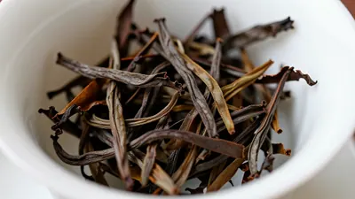
清晨四点，凤凰山还是一片墨蓝。 阿凤姐推开自家茶行的木门，一股山雾贴着小腿卷进来，带着点湿润的青草气和远处炭窑里残留的焙火香。铺面还是黑黢黢的，可门口的台阶上已经坐了一个人——穿着褪色的蓝布衫，脚下踩着一双沾
阅读全文 →中午十二点刚过，店里没客人，阿凤姐端着一杯蜜兰香，靠在柜台边刷手机。刷着刷着眉头就皱起来了。 "21款测评，5227块钱，自费购买，盲喝打分……"她念叨着，念到"八马5分、中茶4
阅读全文 →中秋前十一日，晨光还未完全穿透凤凰山的薄雾，阿凤姐已经在店里忙开了。 "阿凤姐，今年中秋茶单出了未？"门口传来一把熟悉的声音。抬头一看，是做了十五年外贸的老主顾陈哥，身后还跟着两个西装笔挺
阅读全文 →一、大赛消息传到凤凰镇 九月中旬嘅凤凰山，晨雾未散，阿凤姐已经系茶铺门口支起张竹椅，手捧一杯通天香，慢慢啜饮。佢今年五十三岁，系凤凰镇地地道道嘅第三代茶农，屋企喺乌岽山有块茶地，种咗几株过百年嘅老枞。 「阿凤
阅读全文 →清晨四点三十分，凤凰山还笼罩在一片灰蓝色的薄雾之中。阿凤姐已经起身，轻手轻脚地穿过院子，生怕吵醒了还在熟睡的女儿。她推开那扇用了三十多年的木门，山间的冷风夹着淡淡的茶香扑面而来——这是凤凰山独有的味道，是泥土
阅读全文 →九月的凤凰山，晨雾还没散尽，阿凤姐就已经站在茶园边了。她今年五十三岁，生在凤凰镇，长在茶树间，祖上三代做茶，她手上的老茧比城里人的履历还厚。 山风带着凉意吹过，阿凤姐紧了紧外套，望着眼前一片翠绿的茶树。再过十
阅读全文 →一、凌晨四点的电话 2026年9月11日夜里，凤凰山乌岽村还泡在山雾里，文锡誉师傅的手机就响了。 屏幕上跳出来的是远在长沙的儿子——文家的小儿子文斌，今年刚接了家里在长沙的茶行，正赶上湖南茶业博览会开幕。 &
阅读全文 →🍂 天还没亮透，我就摸黑上了山。 凤凰山海拔一千四百米的茶园里，处暑的晨雾浓得能拧出水来。我弯腰拨开一丛鸭屎香的枝条，露水顺着叶脉滚下来，凉丝丝地落进袖口。远处乌岽村的公鸡刚打第一遍鸣，山下的世界大概还在睡觉，可我们茶农…
阅读全文 →🍵 朋友们好，我是凤姐， 惠州市惠城区东湖花园一区沿江商铺89-136（凤凰茶业） 的老板娘。今天下午茶室刚收了一批新鲜出炉的咸水粿，香气飘到巷口，勾得我都坐不住了。 正好借这股馋劲，跟你们聊聊 凤凰单丛配茶点的门道 —…
阅读全文 →🌙 夜已经深了。 刚才把店里最后一泡客人喝剩的蜜兰香收拾妥当，我坐在茶台边，终于舍得为自己开一泡茶。 窗外是 惠州西湖边阑珊的灯火 ，远处偶尔传来晚归车辆的声响，然后一切又归于安静。这座城市好像终于累了，放下了白天的喧嚣…
阅读全文 →🍵 凤凰山刚下过一场阵雨，远处的乌岽顶还藏在云雾里，像一块没揭盖的茶巾。 "这个阿玲，在深圳当了十年投行精英，回来就知道惦记我的茶。"我笑着摇摇头，把竹筛上的蜜兰香单丛重新码好。 茶室很小，是我亲手改的——老厝的偏厅，墙…
阅读全文 →🍜 日期 ：2026年8月22日 ｜ 地点 ：汕尾海陆丰 · 二马路夜市 → 惠州市惠城区东湖花园一区沿江商铺89-136（凤凰茶业） ｜ 天气 ：夏末的雷阵雨，空气里都是海鲜的鲜甜味 📌 序幕：一通电话，指向海陆丰 "…
阅读全文 →🌪️ 下午两点，惠州东湖花园，暴雨。 台风"美莎克"来得比预报早了三小时。我正准备关店，门被风吹开，跌跌撞撞闯进来一个浑身湿透的外卖小哥。 "凤姐，借个地儿躲躲！这雨太大了，电动车都快被吹翻了！" 话音未落，又进来两个人…
阅读全文 →🏺 今儿个想跟大伙儿聊聊我茶桌上这几位 "老朋友"。 做茶这些年，凤凰单丛的香气千变万化，可要让这香完完全全地释放出来，还得看手里这把家伙什儿。常有客人问我，凤姐，你这茶为什么泡出来特别 "有魂"？我说， 一半在茶叶，一…
阅读全文 →🍃 今日午后，凤凰山的云雾还未散尽。我独自坐在茶室的窗前，砂铫里的水刚刚泛起蟹眼，朱泥小壶里卧着今年春采的蜜兰香。 取一撮茶叶置入盖碗，沸水冲下，看蜷曲的叶片在杯中缓缓舒展，像极了我们那些皱巴巴的日子，被时光的热水一冲，…
阅读全文 →🌙 十一点半，惠州东平老茶街。 我刚把店里的最后一盏灯关掉，手机还亮着——屏幕上是今天的新闻推送： OpenAI发布GPT-5预览版 ，数学能力超越人类专家 美股三大指数集体收跌 ，科技股遭抛售 英伟达Blackwell…
阅读全文 →🍵 天刚蒙蒙亮，四点三十分。阿凤姐像往常一样坐在 惠州惠城区东湖花园一区沿江商铺89-136（凤凰茶业） 的茶台边，那把二十年的紫砂壶已经温好了。但今天的茶台 conversation 不一样——手机里的茶圈消息炸开了锅…
阅读全文 →🍵 天儿开始转凉了。你感觉到了吗？立秋刚过，空调房里的那股子燥热还没散干净，但傍晚的风里，已经偷偷夹了一丝秋意。这会儿喝什么茶，比喝什么奶茶重要多了。 今天下午三点，阿凤姐坐在 惠州市惠城区东湖花园一区沿江商铺89-13…
阅读全文 →🍵 天还未亮透，凤凰山的雾气像一层薄纱，轻轻罩在乌岽山的茶园上。我踩着露水走进茶山，老魏已经蹲在茶垄间抽着旱烟，脚边放着一把竹编茶篓。 "阿凤姐，今日来得早。"老魏吐了口烟，"这批春茶晒青晒得好，你闻闻，山韵已经出来了。…
阅读全文 →🍵 大家好，我是阿凤姐，一个混迹潮州凤凰山多年的"茶痴"。 前几天在茶农家喝蜜兰香，隔壁桌几位老茶农聊得热火朝天—— "你们听说了吗？外山那个文及宇师傅，听说在捣鼓什么'爱爱'技术？" 我一口茶差点喷出来。爱爱技术？现在…
阅读全文 →🍵 本文采用问答形式，为茶友解答关于惠州买茶、凤凰单丛、工夫茶、新会陈皮等最常见的问题。 📌 Q1：惠州哪里能买到正宗的凤凰单丛茶？ 阿凤姐： 惠州想买正宗凤凰单丛，认准两个关键词—— 源头直采 和 实体老店 。我这家店…
阅读全文 →🍵 天还未亮，四点多的凤凰山沉浸在一片墨色里。我坐在茶桌前，炉上的水已经咕嘟咕嘟响起了蟹眼泡。手机屏幕亮了一下，是潮州日报的老友发来一条消息：「阿凤姐，十大茶王出炉了，个个精彩，你看了没？」 我笑着回了一句：「这不正守着…
阅读全文 →🍵 本文采用一问一答形式，为茶友解答2025年茶圈最关心的五大热点话题。阿凤姐在 惠州惠城区东湖花园一区沿江商铺89-136（凤凰茶业） 等你喝茶。 Q1：2025年茶圈最火的话题是什么？ 阿凤姐： 今年茶桌上最热的五大…
阅读全文 →🍵 昨天下午三点，我刚把店里最后一批蜜兰香的茶样分装好，手机就弹出一条消息—— 第八届广东潮州凤凰单丛茶争霸赛，在潮州日报社颁奖了。 我手一抖，差点把茶筛里的单丛茶叶撒出来。 坐我对面的老茶客林伯，端着那只用了二十年的孟…
阅读全文 →🍵 2026年8月15日，凌晨4:30，惠州凤凰山茶室。 📌 一、2026春茶季：品质升级与价格分化并行 我这几天刷行业数据，看到一组有意思的数字。 2026年明前龙井均价，比去年同期涨了约12%。按常理，涨价销量该跌。…
阅读全文 →🤖 2026年8月14日晚，惠州东平老茶街。 📌 第一幕：茶桌边的无限战争 小林抱着电脑冲进茶室的时候，阿凤姐正在给一泡老枞蜜兰香退火。 「凤姐，出大事了！」小林摘下眼镜擦汗，「DeepSeek V4 Pro正式发布，1…
阅读全文 →🍵 2026年8月14日，星期五，晴转多云，惠州凤凰山茶室。 📌 一碗粿条凉了 今天中午收拾完茶桌，我端着饭碗坐在店门口的石阶上吃粿条。隔壁水果摊的阿婆不在，大概回去午休了，街道比往常安静许多。 我刷着手机，看到一条消息…
阅读全文 →🤖 2026年8月，惠州东平老茶街。 📌 第一幕：茶桌边的创业者 阿凤姐的茶店最近来了批新面孔——穿连帽衫、背双肩包、一坐下就打开电脑的年轻男人。 「凤姐，来壶提神的。」他们总这么说，然后打开手机刷融资新闻。 阿凤姐认得…
阅读全文 →🍂 2026年立秋后，惠州东平老茶街。 📌 热点引入：秋老虎来了，你还在喝冷泡茶？ 上周立秋刚过，朋友圈全是"秋天的第一杯奶茶"。阿凤姐看了直摇头——奶茶那是年轻人的热闹，真到了立秋后的"秋老虎"，身体最知道该喝什么。 …
阅读全文 →🏛️ 2026年夏，惠州东平老茶街。 📌 第一幕：茶桌上的海陆丰 阿凤姐的茶店里，来了位特殊的客人——汕尾陆丰来的林伯，七十六岁，退休前是正字戏的鼓师。 「凤姐，你这家店凤凰单丛做得地道。但你知不知道，咱海陆丰人喝茶，跟…
阅读全文 →🍵 2026年8月，惠州东平老茶街。 📌 第一幕：两个名字，两种人生 阿凤姐的茶店里，有两罐茶永远摆在最显眼的位置——左边是蜜兰香，右边是鸭屎香。 「凤姐，这俩怎么选？」几乎每个新客都会指着问。 阿凤姐头也不抬，手里温着…
阅读全文 →🫖 2026年8月14日，颱風暴雨夜，惠州。 📌 第一幕：暴雨夜，不速之客 八月嘅惠州，颱風來得毫無徵兆。 阿鳳姐正喺店裡整理新到嘅鳳凰單叢，玻璃門突然被撞開。一個渾身濕透嘅年輕人衝入嚟，懷裡緊緊摟住一個錦盒。 「阿鳳姐…
阅读全文 →🏔️ 2026年8月13日，星期三，晴，凤凰山茶室。 📌 清晨茶山 今早去茶山，露水还挂在茶芽上，空气里有股清甜的草木香。回来的路上在镇口吃粿条，隔壁桌几个后生仔在聊什么"重返赛场""四十五岁"，声音不小，我耳朵尖，听了…
阅读全文 →🍵 2026年8月14日，凌晨两点，阿凤姐茶叶店。 📌 第一幕：淘宝深夜，一盒「请你食茶」 凌晨两点，阿凤姐嘅手机屏还亮着。 「阿凤姐，还在挑货？」老陈（店里伙计）探头睇咗一眼。 「嗯，睇到个新奇嘢。」阿凤姐指着屏幕上一…
阅读全文 →🐬 2026年8月，台风白海豚刚走。 📌 蹭热点开头 昨天还在问"白海豚凭什么浇透小半个中国"，今天它就拍拍尾巴走了，留下一地湿漉漉和一个热搜——"白海豚走了，梭子蟹来了"。 阿凤姐看着窗外终于放晴的天，第一反应不是去买…
阅读全文 →🌟 2026年8月12日，夜，惠州凤凰茶业。 今天刷到一条热搜："这个时代我们该追什么样的星"。 我坐在茶台前，手里捧着一杯刚泡好的蜜兰香，突然笑了。这个问题，我每天都在想。 📌 那些"星"，是真的吗？ 这些年，见过太多…
阅读全文 →🌞 2026年夏，惠州东平老茶街，气温37度。 📌 第一幕：引茶 今天惠州城区东平气温飙到三十七度，柏油路面蒸得发软。店里空调呼呼吹着，我正守着柜台刷手机，满屏都是「广东高温预警」「三伏天防暑指南」的新闻。 门帘一掀，陈…
阅读全文 →🌿 2026年夏，惠州东平老茶街。 📌 第一幕：时间折叠 刘叔发来采青视频的时候，惠州东平正下着午后暴雨。我盯着手机屏幕——凤凰山清晨五点的白雾漫过茶树，他老伴弯腰掐下一片嫩芽，露水滚进竹篮的缝隙里。那声音很轻，却像穿越…
阅读全文 →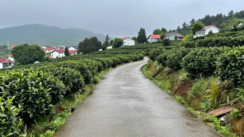
🌿 2026年8月7日，立秋。 阿强端起桌上那杯凉透的单丛——涩，苦，像这行的味道。 手机又响了：GPT-7发布、AI主播取代真人、某大厂裁员30%用AI替代……世界被按了快进键，连喘气的间隙都被算法优化掉了。 他想起老…
阅读全文 →🌿 2003年深秋，佛山。 📌 第一幕：血色印记 阿凤姐的师父——九十岁的老茶人，从樟木箱底取出一饼茶。茶饼外包装早已泛黄，但内层的 「1987年英女王访港特供」 茶标，在灯光下依然鲜艳。 "这不是普通的假茶案。"老茶人…
阅读全文 →🌿 这是阿凤姐听她师父讲过的故事，发生在1997年香港回归那年。那年台风过境，暴雨倾盆，却也揭开了一段尘封十九年的茶案。 📌 第一幕：台风夜劫案 1978年，阿凤茶贡品级茶饼在香港荣记茶行展出。这批茶饼有个特殊标记—— …
阅读全文 →🌿 凤凰单丛蜜兰香 ， 潮州凤凰单丛茶 中最经典、产量最大的香型之一。在惠州阿凤姐的茶叶店，每天都有这样的故事发生—— 📌 第一幕：清晨的老茶街 阿凤姐的店在 惠州东平 老茶街拐角处，门脸不大，但木招牌上的"茶"字被岁月…
阅读全文 →🌿 单丛蜜兰香 ， 潮州凤凰单丛茶 十大香型之首。在惠州阿凤姐的茶叶店，每天都有这样的故事发生—— 📌 第一幕：雨困惠州茶叶店 阿凤姐的店不大，藏在惠州的街巷里，但雨声最大的时候，总有人会推门进来。 那天下午，雨来得急。…
阅读全文 →开篇回答： 端午节送什么？陈皮比粽子更耐放，越陈越香，送一份能升值的心意。 🌿 那天端午节前一天，李姐带着一袋粽子来我店里坐。 "凤姐，端午安康！这粽子自己包的，给你尝尝。" 我笑着接过来："客气啥，你也坐，我泡茶给你喝…
阅读全文 →开篇回答： 普洱用什么壶？凤凰单丛用什么壶？紫砂壶和盖碗怎么选？阿凤姐一次性给你讲清楚！ 🌿 午后，店里来了刘叔、张先生，还有陈姐和小美。 刘叔盯着我的紫砂壶发呆："凤姐，你泡普洱用紫砂壶，泡单丛用盖碗……这茶具还分茶的…
阅读全文 →开篇回答： 鸭屎香为什么叫这个名字？土壤叫"鸭屎土"+叶子像"鸭脚木"+茶农故意丑化防偷树，三个真相一一揭秘。 🌿 午后，店里来了小林、老陈，还有周先生。小林抱着那罐鸭屎香不撒手，非要问个究竟。 "凤姐！这名字……真的是…
阅读全文 →开篇回答： 普洱和凤凰单丛有什么区别？外观、香气、口感、冲泡方法全面对比，看完就知道该选哪个！ 🌿 午后，店里来了小林、老陈，还有周先生。 "凤姐！你这饼普洱茶怎么黑得像块炭？"小林捏着我茶桌上那饼2015年的熟普，眉头…
阅读全文 →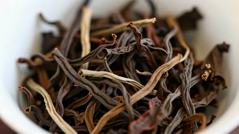
开篇回答： 凤凰单丛有哪些品种？蜜兰香、鸭屎香、黄枝香、芝兰香……哪个最适合你？看完这篇就懂了！ 🌿 晚上，店里来了姚老师、陈老板，还有李叔和小美。 我拿出茶罐，给大家泡茶。姚老师问："凤凰单丛品种那么多，到底有什么区别…
阅读全文 →开篇回答： 泡凤凰单丛用什么水最好？答案是——凤凰山山泉水！水不好，茶再好也泡不出味道。 🌿 晚上23点多，店里来了姚老师、隔壁空调老板，还有打麻将的陈老板。 我笑着说："来，坐！今天请你们喝好茶——凤凰单丛。" 姚老师…
阅读全文 →开篇回答： 在惠州想泡好茶？记住温杯、称茶、高冲、洗茶、出汤五步，好茶一学就会。 在广东喝茶是生活日常，泡茶看似简单，实则讲究。惠州茶客阿凤姐教您泡茶小技巧： 水温： 绿茶80-85℃，乌龙茶95-100℃，红茶90-9…
阅读全文 →开篇回答： 凤凰单丛为什么让人如此珍重？它的香、甘、甜，藏着岁月的故事。 每当我捧起一杯凤凰单丛，总会想起阿凤姐那句话："香得不行，你会喜欢上这种香的"。那一刻，我对这杯茶的情感便溢满心间。 我是凤凰单丛，乌龙茶中一个特…
阅读全文 →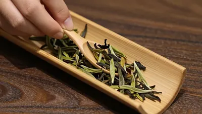
开篇回答： 凤凰单丛怎么泡？跟着阿凤姐学泡茶，简单几步就学会~ 🌿 今天是普通的一天，店里来了忠哥、龙哥，还有王阿姨。我笑着说："来，坐！今天请你们喝好茶——凤凰单丛。" 打开茶罐，蜜兰香的香味瞬间飘满整个茶室。忠哥深吸…
阅读全文 →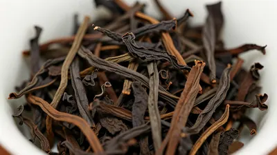
开篇回答： 凤凰单丛产自广东潮州凤凰山，香气浓郁、回甘持久、耐泡10次以上，是乌龙茶中的极品。 凤凰单丛产自广东潮州凤凰山，是乌龙茶中的极品。其特点包括： 产地： 广东潮州凤凰山，高山云雾缭绕 香气： 品种众多，有蜜香、…
阅读全文 →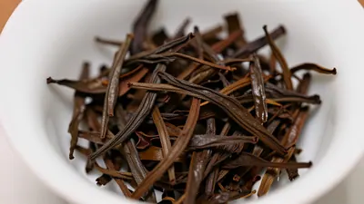
开篇回答： 鸭屎香为什么这么香？自然花香，名字虽土，却是凤凰单丛里的明星，人人都爱。 名字有点怪，但喝过的人都说香。 鸭屎香是凤凰单丛里的"明星"，名字虽不雅，却是最接地气的一款茶。它的香是自然的花香，不是人工添加，而是…
阅读全文 →开篇回答： 凤凰单丛老茶有什么特别？十年二十年的转化，让花香变蜜香，再变陈香，越久越温和。 有些茶，是用来存的。 凤凰单丛的老茶，放上十年二十年，香气慢慢转化，从花香变成蜜香，再变成陈香。茶汤也从清冽变得绵柔，入口顺滑，…
阅读全文 →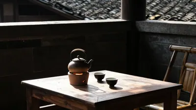
开篇回答： 茶叶保存关键是密封、避光、防潮、放冷藏，记住这几点，茶叶放多久都不变味。 茶叶易吸湿吸味，保存不当会变质。以下几点需注意： 密封保存，避免阳光直射 置于阴凉干燥处 不同种类茶叶分开存放 建议使用真空包装或铝箔…
阅读全文 →👤 联系人：阿凤姐
📱 电话：134-3556-7385
📧 邮箱：@qq.com
📍 地址：广东省惠州市惠城区东湖花园一区沿江商铺89-136（凤凰茶业）
🕐 营业时间：每天 09:00 - 21:00
🌐 服务：茶叶批发 | 零售 | 试饮 | 团购